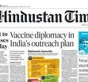

Technology Is Transforming Modern Education

Technology has become an important part of modern education. Students can now access lessons, educational videos, digital books, and other learning resources through computers and mobile devices. These tools help students learn beyond the traditional classroom environment.Online learning platforms allow learners to study according to their schedules. Recorded lectures can be watched multiple times, helping students understand difficult concepts at their own pace. Teachers can also share notes and assignments quickly through digital platforms.
Educational institutions are using smart classrooms to make lessons more interactive. Presentations, animations, and visual demonstrations help explain complex topics clearly. Such resources can make learning more engaging and enjoyable.
New Learning Opportunities
Digital technology provides access to courses from different parts of the world. Students can learn programming, design, communication, and many other subjects through online resources. This provides more opportunities for developing useful skills.
Technology also improves communication between teachers and students. Questions can be discussed using online meetings, learning portals, and email. Parents may also receive regular information regarding attendance and academic performance.
However, technology should be used responsibly. Students must protect their personal information, avoid unreliable sources, and balance screen-based activities with other forms of learning. When used carefully, technology can make education accessible, flexible, and effective.